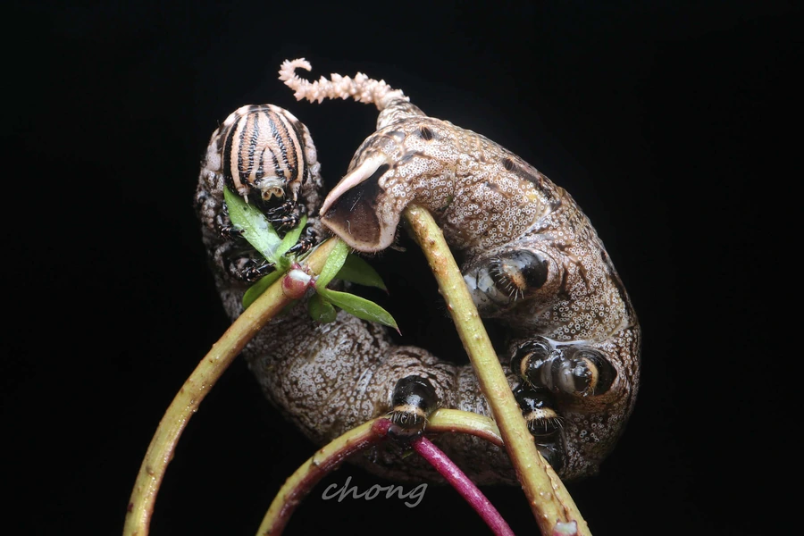

昆虫 · 动物界
鬼脸天蛾 Acherontia lachesis

胸部背面有骷髅状斑纹的大型天蛾，能潜入蜂巢取食蜂蜜，中国南方至东南亚分布，是最知名的天蛾之一。
- 分类
- 门节肢动物门纲昆虫纲目鳞翅目科天蛾科属鬼脸天蛾属
- 栖息环境
- 林缘、果园、花园与蜂场附近，成虫夜间活动
- 地理分布
- 中国南方、东南亚和印度等地
- 保护级别
- 暂无评估
物种志
鬼脸天蛾翅展约 10–13 cm，体粗壮，前翅黑褐色带复杂的浅色云纹，后翅黄色带黑色横带，胸部背面有淡黄色的骷髅状斑纹，因此得名；腹部有黄色和黑色相间的环带。成虫体表密被绒毛，触角羽状。
它能进入蜜蜂巢内取食蜂蜜，靠体表的化学气味模拟蜂群信息素，使守卫蜂不加攻击；被抓住时还会摩擦发声，声音类似蜂王。成虫夜间活动，吸食花蜜和树液，幼虫取食茄科、唇形科等多种植物叶片。鬼脸天蛾分布在中国南方、东南亚和印度，一年发生多代，以蛹越冬。它因骷髅斑纹和潜入蜂巢的特殊习性而闻名，是民间传说和博物学著作中经常出现的昆虫，它在民间常被视为神秘甚至不祥之物。
形态与习性
- 食性成虫吸食花蜜和树液，也会潜入蜂巢取食蜂蜜
- 翅展约 10–13 cm
- 特征胸部背面有淡黄色骷髅状斑纹
- 蜂巢习性靠模拟蜂群气味进入蜂巢取食蜂蜜
- 生活史一年发生多代，以蛹越冬
- 分布中国南方、东南亚和印度
趣味知识
- 鬼脸天蛾胸部背面的骷髅斑纹，是它得名的原因。
- 它能混入蜂巢取食蜂蜜，靠的是模拟蜜蜂的气味。
- 被抓住时，鬼脸天蛾会摩擦发声，声音很像蜂王。